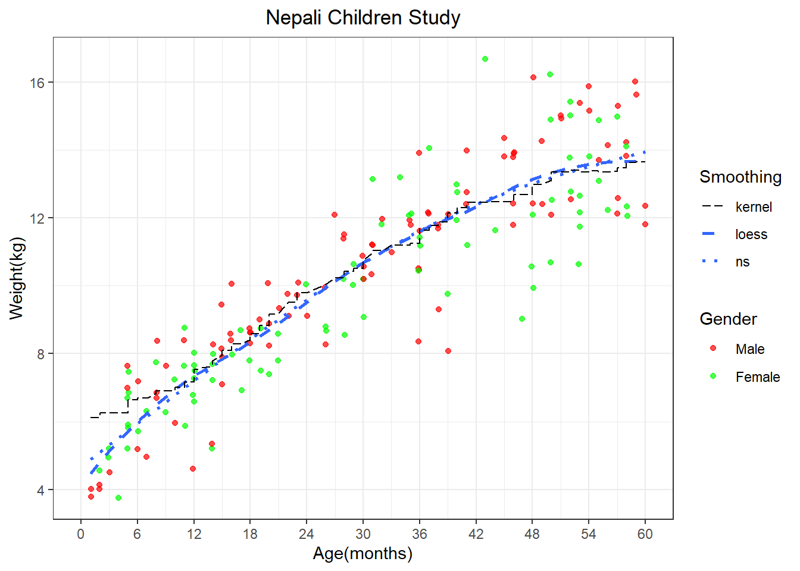

library(tidyverse)
library(ggplot2)
library(splines)
library(data.table)Analysis1
Goal
The purpose of this analysis is to explore the relationship between age (in months) and weight (in kilogram) among 185 infants aged 0 to 60 months in Nepal.
Method
In this project, we utilized three modeling techniques: linear regression, multiple regression with splines (linear spline, cubic spline, and natural spline), and multiple linear regression with adjusting covariate height.
We checked modeling assumptions, utilized visualization to compare the goodness of fit of each model, and used cross-validation to compare MSEs across models.
Note
This is a class project from the Method in Biostatistics III class under Dr. Elizabeth Colunati.
Analysis
nepalantro <- read_csv("nepal.anthro.csv")
View(nepalantro)
# Select the first observation for analysis
nepalantro <- nepalantro %>% filter(num == 1) %>% select(sex, wt, ht, age) %>% mutate(wt = as.numeric(wt), ht = as.numeric(ht))
nepalantro[nepalantro == "."] <- NA
nepalantro <- nepalantro[complete.cases(nepalantro),]
nepalantro <- nepalantro[order(nepalantro$age), ]A Visualization on the Trend of Weight as Age in Months Increases
# Kernel smooth
ks.fit <- with(nepalantro, ksmooth(age,wt, bandwidth=20))
# Plot
ggplot(data=nepalantro, aes(x=age,y=wt)) +
geom_point(aes(color=as.factor(sex)), position=position_jitter(width=0.1,height=0.1),alpha=0.7) +
geom_smooth(aes(linetype="ns"),method="lm", formula=y~ splines::ns(x,3),se=FALSE) +
geom_smooth(aes(linetype="loess"),method="loess",span=0.5,se=FALSE) +
geom_line(aes(x=age,y=ks.fit$y,linetype="kernel"))+
labs(x="Age(months)",y="Weight(kg)",title="Nepali Children Study") +
scale_colour_manual(name="Gender",values=c("1"="red","2"="green"), labels=c("Male","Female")) +
scale_linetype_manual(name="Smoothing", values= c(ns="dotted",loess="dashed",kernel="solid")) +
theme_bw() +
theme(plot.title= element_text(hjust=0.5)) +
scale_x_continuous(breaks=seq(0,60,6),limits=c(0,60))
#pick three ages, 6, 30, 60, calculate mean weight
setDT(nepalantro)
result <- nepalantro[age %in% c(12, 36, 60), .(Mean_Weight = mean(wt, na.rm = TRUE), Sd_Weight = sd(wt, na.rm = TRUE)), by = age] # . means make a list
print(result) age Mean_Weight Sd_Weight
<num> <num> <num>
1: 12 6.914286 1.0838644
2: 36 11.025000 1.5452693
3: 60 12.150000 0.3535534A Summary on the Trend of Weigth by Sex
ggplot(data=nepalantro, aes(x=age,y=wt,color = as.factor(sex))) +
geom_point(aes(color=as.factor(sex)), position=position_jitter(width=0.1,height=0.1),alpha=0.7) +
geom_smooth(method = "loess", span = 0.5, se = FALSE) +
labs(x="Age(months)",y="Weight(kg)",title="Nepali Children Study") +
scale_colour_manual(name="Gender",values=c("1"="red","2"="green"), labels=c("Male","Female")) +
theme_bw() +
theme(plot.title= element_text(hjust=0.5)) +
scale_x_continuous(breaks=seq(0,60,6),limits=c(0,60))
setDT(nepalantro)
result <- nepalantro[age %in% c(12, 36, 60), .(Mean_wt = mean(wt)), by = .(sex, age)]
print(result) sex age Mean_wt
<num> <num> <num>
1: 2 12 7.283333
2: 1 12 4.700000
3: 2 36 11.033333
4: 1 36 11.020000
5: 1 60 12.150000